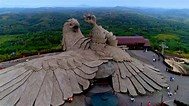

MAIN ATTRACTIONS
Ashtamudi lake
The incredible beauty of Kerala, Ashtamudi lake has eight branches that coincide with the Arabian sea after converging into one channel, hence the name Ashtamudi, where Ashta means eight and mudi means branch. Spell-binding the travelers with its inarticulate and persuasive charm, this second largest lake in Kerala is one of the most popular places to visit in Kollam.


Thangassery lighthouse
Climb up the 200 steps to enjoy the panoramic view of the Arabian sea and Kollam. Mounting grandly above the coconut trees, Tangasseri Lighthouse is the second tallest lighthouse with a height of 140 feet on the coast of Kerala. The red and white painted bands around the lighthouse make it marvelous and dignified. Moreover, witnessing the pleasant sunset from the top of the lighthouse is a breathtaking experience.
Palaruvi falls
The whitestream waterfall descending from the height of 300ft resembles the shape of a horse’s tail. The stream of milk names the cascade as Palaruvi, which rushes down the mountain, giving a glorious view and is one of the top places to visit in Kollam. The tourists experience the freshness of its water from the lower pool generated by a massive storm of the waterfall. Along with admiration of its alluring beauty, Palaruvi Falls also holds a sacred significance and is worshipped by local people.


Kollam beach
The beauty of Kollam beach makes it a vantage point to unwind and relish its picturesque landscape. The mysterious view of natural blue waters blending with the infinite bright sky bequeaths the sightseers amazed. The Kollam beach calls to rejuvenate the mind and body, energising the tourists with its cultural and spiritual aura. This beach is famous among some travelers with the name of Mahatma Gandhi Beach and soothes wanderers with lush green, calm backwaters, and endless water activities.
Jatayu Earth centre
Jatayu Earth Center, also known as Jatayu Nature Park or Jatayu Rock, is a park and tourism centre at Chadayamangalam in Kollam district of Kerala. It stands at an altitude of 350m (1200ft) above the mean sea level. Jatayu Nature Park holds the distinction of having the world’s largest bird sculpture, which is of the Jatayu.
